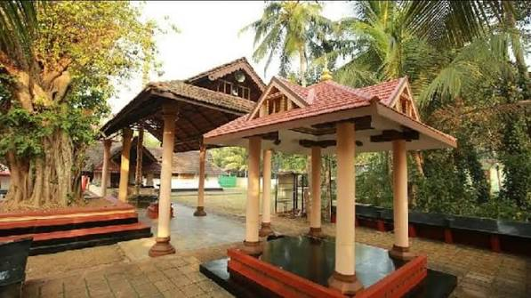

A collaborative initiative by Sree Sankaracharya University of Sanskrit (Dept. of Geography) mapping the resources and infrastructure of Kadirur Grama Panchayat.
Explore Map DataKadirur Grama Panchayat is a rural local self-government body located in the Kannur district of Kerala, India. Positioned roughly 7 kilometers from Thalassery town along the Thalassery–Coorg road, this vibrant panchayat falls under the Thalassery Assembly constituency and the Vadakara Lok Sabha constituency.
The Panchayat is responsible for providing essential civic services, maintaining local infrastructure, supporting sanitation and waste management, and implementing various government development programmes.
Its geographical location, settlement pattern, transportation network, drainage, land use, and natural resources make it an important area for resource mapping and local-level planning. The present WebGIS project provides a comprehensive geographical overview of the region's essential resources.

Kathiroor Suryanarayana Temple
Dive into our comprehensive spatial mapping tool. Toggle custom layers to view administrative boundaries, land utilization, transportation networks, and vital infrastructure in high resolution.